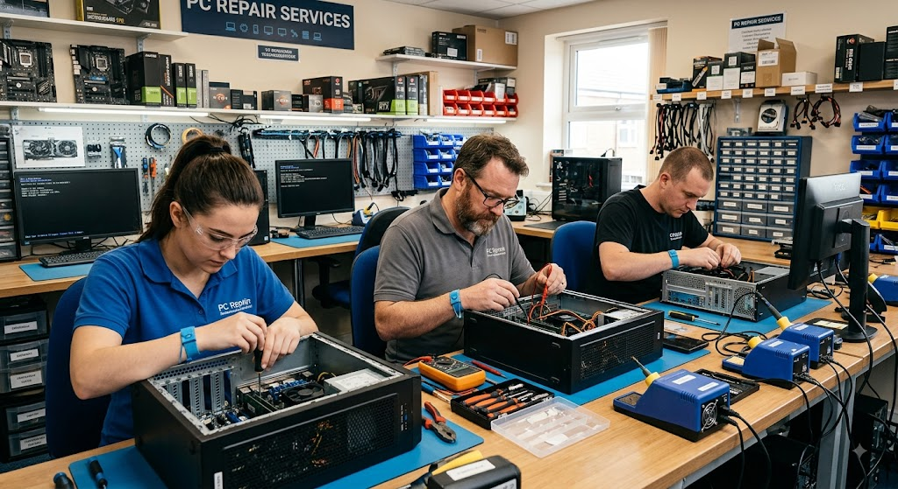

¿Quiénes somos?

Somos un equipo de técnicos apasionados por la tecnología y dedicados a resolver cualquier problema que tenga tu PC. Con años de experiencia y un taller equipado con lo último en herramientas de diagnóstico, te ofrecemos reparaciones rápidas, confiables y con repuestos de calidad. Desde virus y lentitud hasta problemas de hardware. Nos enfocamos en brindar una atención transparente, realizando diagnósticos precisos antes de cada trabajo para que siempre sepas exactamente qué necesita tu equipo.
Confía en PC Fixer para que tu computadora vuelva a funcionar como nueva, ¡Nosotros hacemos el trabajo por vos!